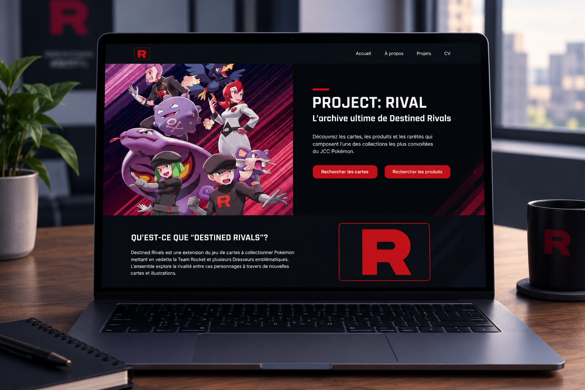
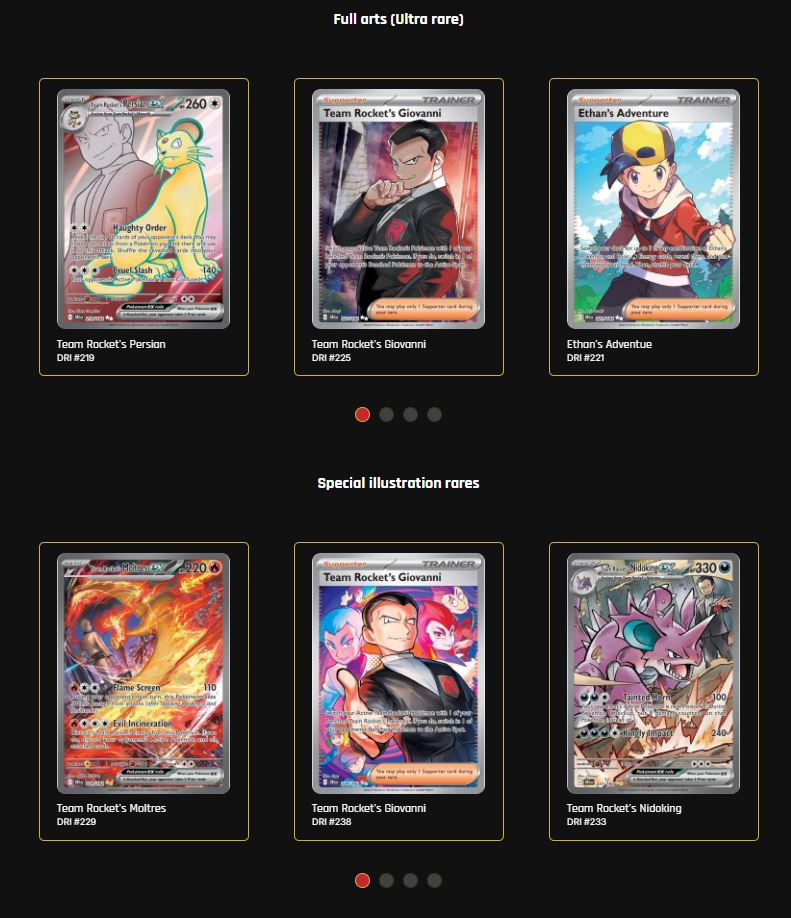
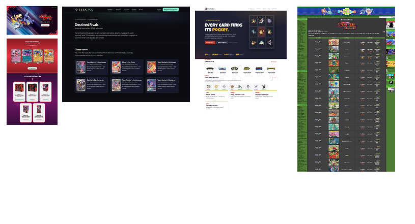
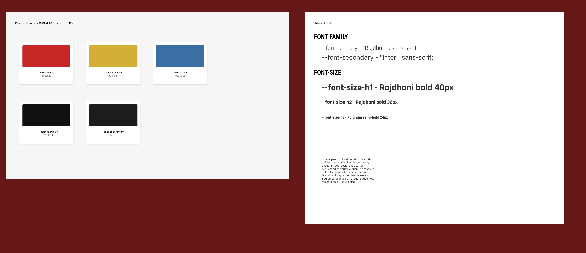
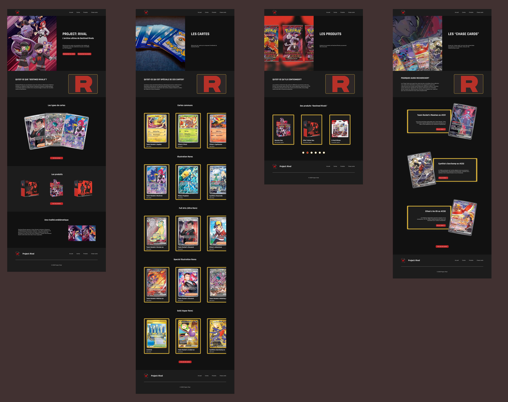
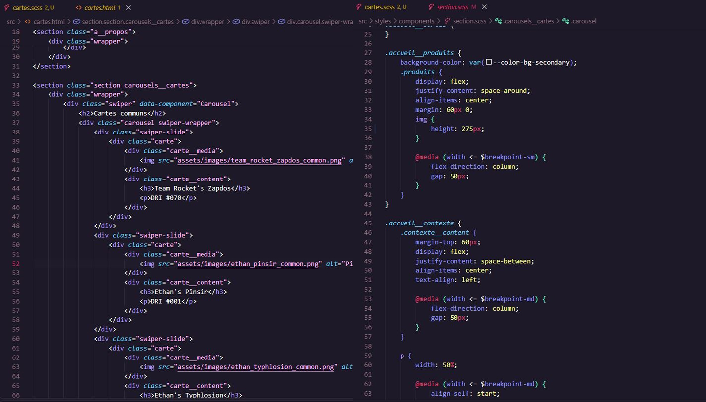
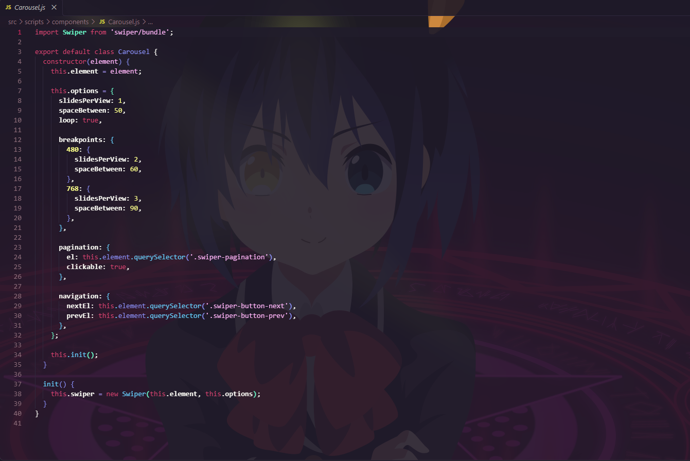
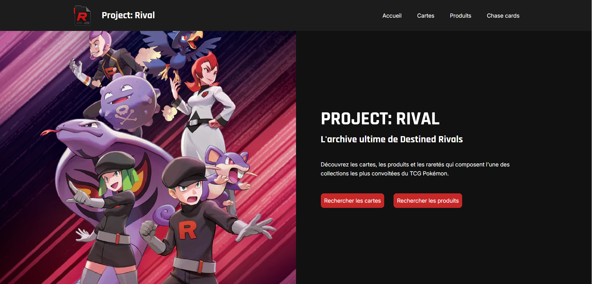

Le site de Project : Rival est une archive de cartes et de produits du même ensemble Pokémon TCG. Seuls les utilisateurs qui ont la passion de Pokémon TCG connaissent bien Destined Rivals, l’ensemble de carte de Team Rocket.
Aucune IA générative n’a été utilisée pour réaliser ce projet ni pour préparer sa fiche.

Les différentes sélections de cartes

Je recherche des comparables et des inspirations pour que ma recherche soit enrichie pour le processus de création du guide de style et de la maquette du site.

Je poursuis la création de mon site en choisissant une palette de couleur impeccable et en choisissant deux excellentes typographies qui seront utilisées dans mes maquettes.

J'ai conçu la maquette avec 4 différentes pages contenant différentes sections pour mon site web: la page d’accueil, la page des cartes, la page des produits et la page des "chase cards".

Suite à la maquette, je conçois avec du code HTML et CSS les pages du site tout en gardant une bonne organisation des sections et des classes que j’utilise pour le CSS.

Suite au CSS de base pour mon site, j’ai programmé des composantes et ajusté le responsive de mon site pour que ça fonctionne sur mobile.

Maintenant que c’est tout finalisé, je peux explorer mon site sur un navigateur pour voir les types de cartes, les produits scellés et les "chase cards" du set.